Speak
英語 自分の言葉で話せる
自分専用の台本で「感情スピーキング」を毎日くり返し、AI英会話で実戦練習。話す速さや返事の速さが数字で育ちます。
目安：1分で155語・返事は2秒以内チアーズGO!は、チアーズメイトの受講生のためのアプリです。3つの柱をまいにち少しずつ進めて、マイで「どこまで来たか」を見る。それだけのシンプルな仕組みです。
自分専用の台本で「感情スピーキング」を毎日くり返し、AI英会話で実戦練習。話す速さや返事の速さが数字で育ちます。
目安：1分で155語・返事は2秒以内毎日20社の海外クライアントにメッセージ。送信から成約までの数字がひと目でわかり、見積もりや輸出できる国もアプリで調べられます。
目安：1日20通・21日間チャレンジやったことや気持ちをタイムラインで発信。ひろばで声で話し、オフ会で会い、外国の方との乾杯写真を地図にためていきます。
目安：国内5人・海外1か国1人と乾杯3つの柱の積み上げは、すべて「マイ」に集まります。入会した日の目標と、今のわたしを並べて見られます。
開いた瞬間に「今日の1つ」と「今日やること」が出ます。何から手をつけるか考える時間がゼロに。
ホームの「はじめる」を押すだけ数えるのは「週5日」。休んだ日はお休みチケットが自動でつなぎ、戻ってきた日はチケットが1枚もどります。
責めない「やさしい連続記録」話した回数、話す速さ、送った数、乾杯した国。がんばりが全部数字とレベルになり、声のアルバムで初日の声と聴き比べもできます。
5つの英語力・Lv・バッジ仲間の「今日やったよ」が流れてきて、乾杯やエールを送り合えます。同じ時間に空いている仲間とも、すぐつながれます。
タイムライン・ひろば・乾杯バディ最初の1週間は、ホームとマイにある「はじめの1週間ガイド」が1日ずつ案内してくれます。
運営から届くあなた専用のリンクを1回開けば、次からはこの端末でそのまま開けます。
ブラウザのメニューから「ホーム画面に追加」。アイコンをタップするだけで、アプリのように開けます。
英語タブの「台本をつくる」で、地元・趣味・仕事・夢など話したいことを入れるだけ。あなた専用の教材ができます。
全部やらなくて大丈夫。ホームの「今日のミッション」3つのうち、できるものからでOKです。
今日のミッションと「今日の1つ」を見て、「はじめる」をタップ。
聞く・読む → 感情スピーキング5回。移動中は「ながら耳トレ」も。
文章をコピーしてInstagramやメールで送り、「送信済み」にするだけ。
練習のあとのカードを1タップでシェア。仲間の投稿に乾杯とエールを。
カレンダーが1マス埋まる。連続記録とレベルの伸びを確認して、おやすみなさい。
今日と今週のことだけが並ぶ、毎日いちばん最初に開くタブです。
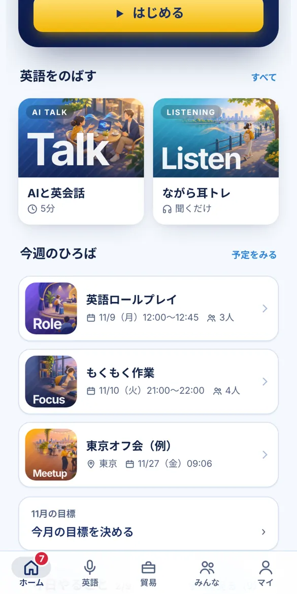
TIPまずは「はじめる」ボタンだけ押す、と決めておくと毎日が続きます。
自分の言いたいことを、自分の台本で、何度もくり返す。それがいちばんの近道です。
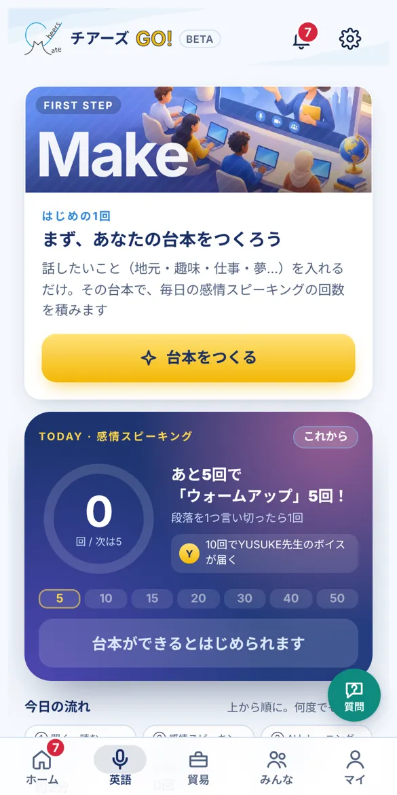
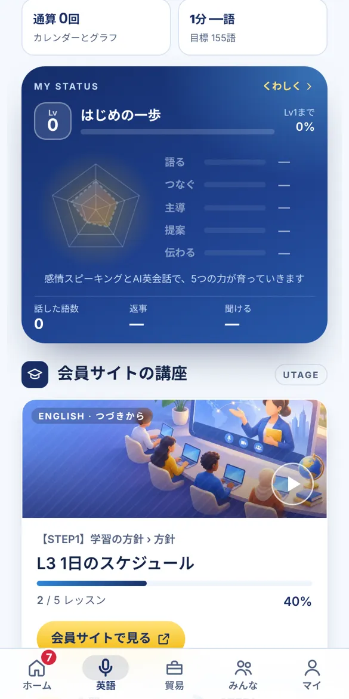
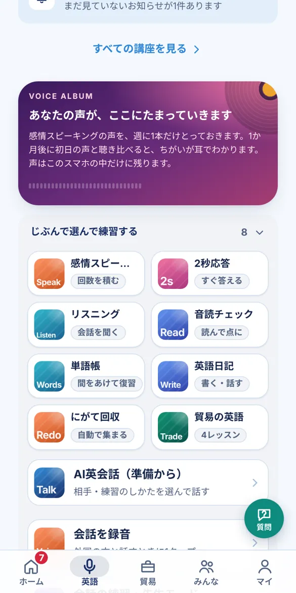
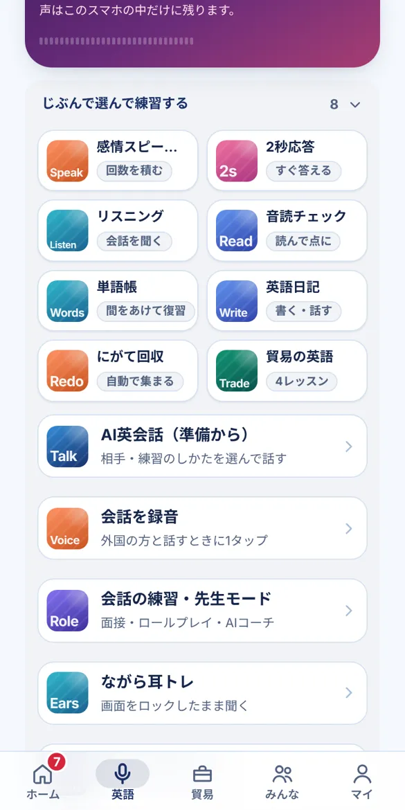
じぶんで選べる練習の道具
TIP完璧より回数。1日5回の「ウォームアップ」から始めて、10回で先生のボイスをもらいましょう。100回言えた台本は「卒業」です。
毎日の20通が、返信・サンプル・成約へとつながっていく様子を追いかけられます。
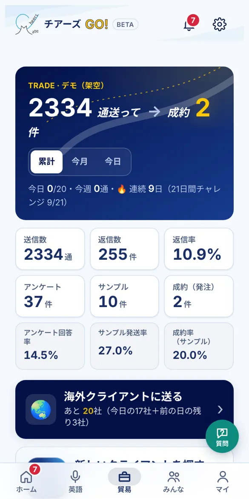
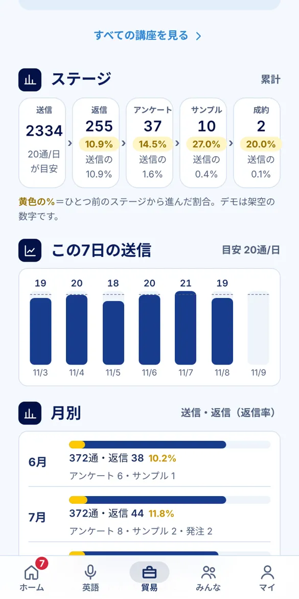
TIP7日の送信グラフで「1日20通」の点線をこえる日を増やしましょう。21日間チャレンジの連続記録も出ます。
交流しようと気負わなくても、発信するだけで仲良くなれる仕組みです。
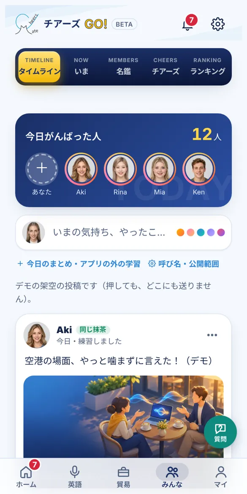
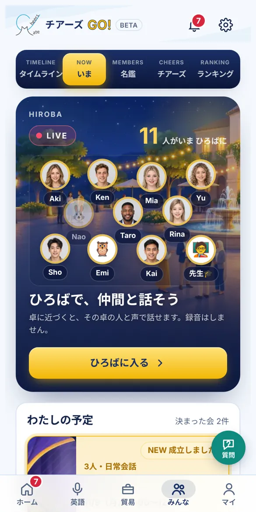
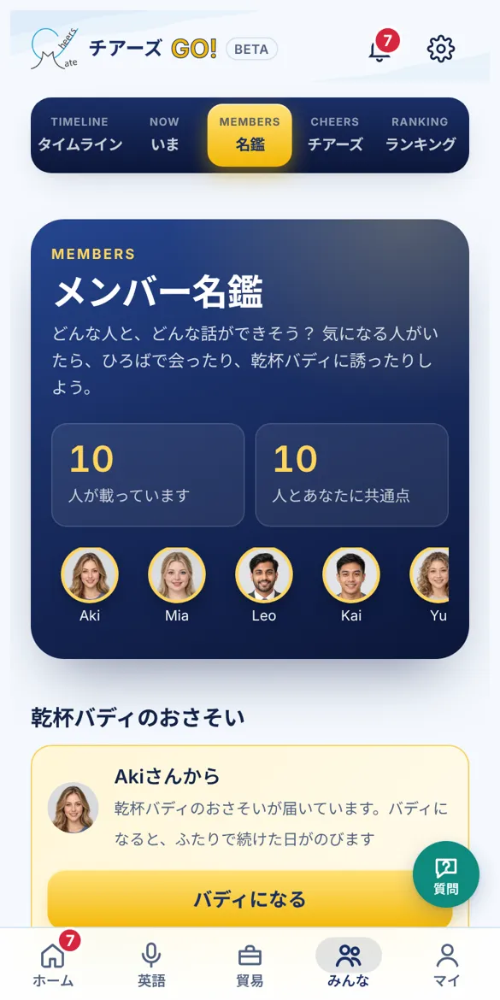
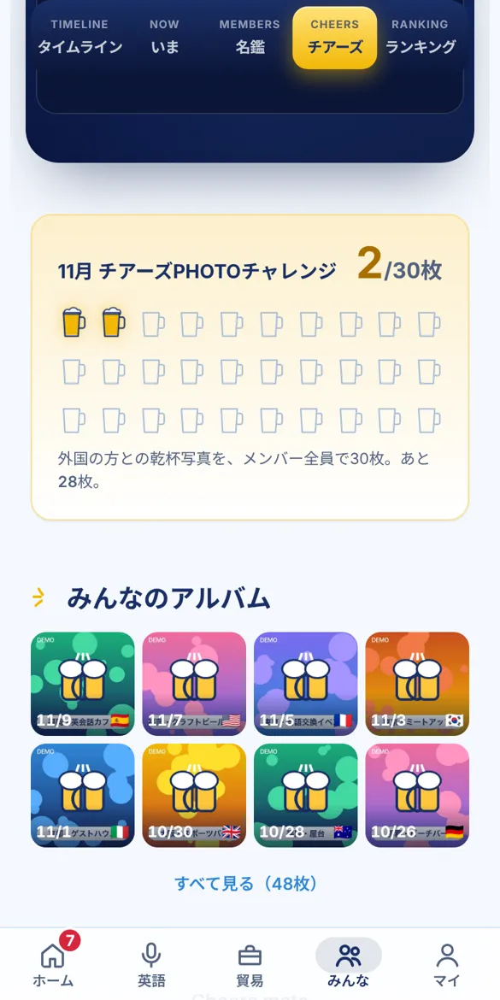
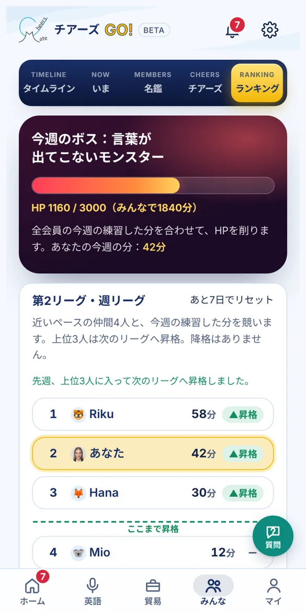
上の5つの切り替えで、それぞれこんなことができます
TIP気になる投稿はミュートもできます（相手には知らせません）。自分のペースで使えるので安心です。
入会した日から今日までの積み上げと、ごほうびが全部ここにあります。
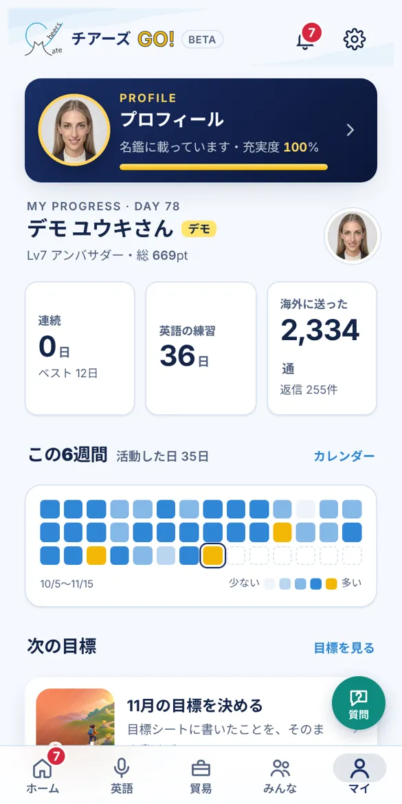
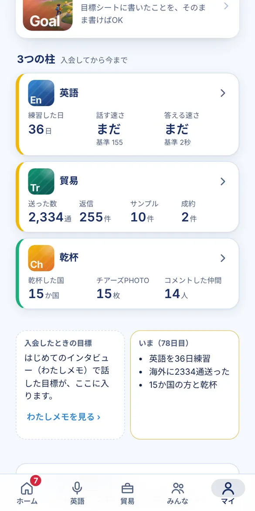
TIP月末は「ふりかえり」で練習・乾杯・声のビフォーアフターを見て、次の月の目標を決めましょう。
がんばりは全部ポイントとレベルに。休んでも、責めずにつないでくれます。
1週間の目標は 30pt。届くと「お休みチケット」が1枚もらえます（2枚まで）。やらなかった日に自動で使われて、連続記録をつなぎます。
ポイントがたまるほど、呼び名が変わっていきます。今の自分の段はマイでいつでも確認できます。
1日の回数で段が上がり、節目でYUSUKE先生・KODAI先生からボイスが届きます。通算100・500・1,000回…でバッジも。
同じリンクをパソコンで開くと、PC向けのレイアウトに切り替わります。じっくり数字を見たい日はパソコンで。
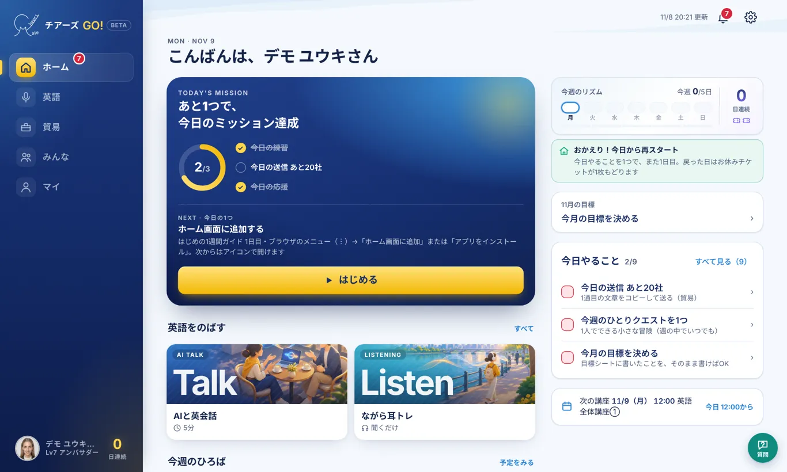
チアーズメイトの資料をもとに、質問ボット（MATCHA）がすぐ答えます。わからないことは担当につないでくれます。
次の講座の日時がわかり、Googleカレンダーへの追加もワンタップ。
講座動画は「つづきから」で、前回見ていたレッスンにすぐ戻れます。